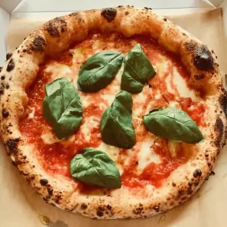

Pizza napolitana

The most authentic, perfect Neapolitan pizza recipe!
This is perhaps the most authentic Neapolitan pizza recipe you will find! What’s more, it’s really easy with just 4 ingredients; flour, water, salt, and yeast.
Authentic Neapolitan pizza originates from the birthplace of pizza, Naples. It involves simple ingredients and traditional methods that have been largely forgotten for quite a while. Luckily it is bouncing back, with many people finding this beautiful style of pizza for the first time.
Ingredients (makes 4 10" pizzas)
- Flour - 640g
- Water (room temperature) - 360g
- Salt (fine) - 14g
- Yeast (dried or fresh) - around 0.2g to 0.5g instantt yeast (check yeast calculator here) - multiply by 3 for fresh yeast.
Instructions for preparing the dough
- Mix all the ingredients into a shaggy mass in a large bowl, starting by adding the water first. You can do this by hand or use a wooden spoon.
- Cover the bowl with cling film, a plastic carrier bag, or a damp cloth (if the cloth isn’t damp the dough may dry out).
- Leave the dough to rest for around 1 hour (the technical term for this process is the Autolyse).
- Turn the dough out onto the counter and knead for around 5 minutes.
- Place the dough back into the bowl and cover tightly.
- Leave the dough to prove (in one big lump, don’t worry too much about the shape) for around 20 hours at room temperature.
- Divide the dough into 4 equal parts (250g each) using some kitchen scales and a knife (or dough scraper). Do this about 4 hours before you intend to cook the pizza (after about a 20 hour prove).
- Place each dough ball into a small bowl and cover. Alternatively, use a large tupperware container with a lid, or two smaller ones.
- Leave the dough balls to prove again for about 4-6 hours.